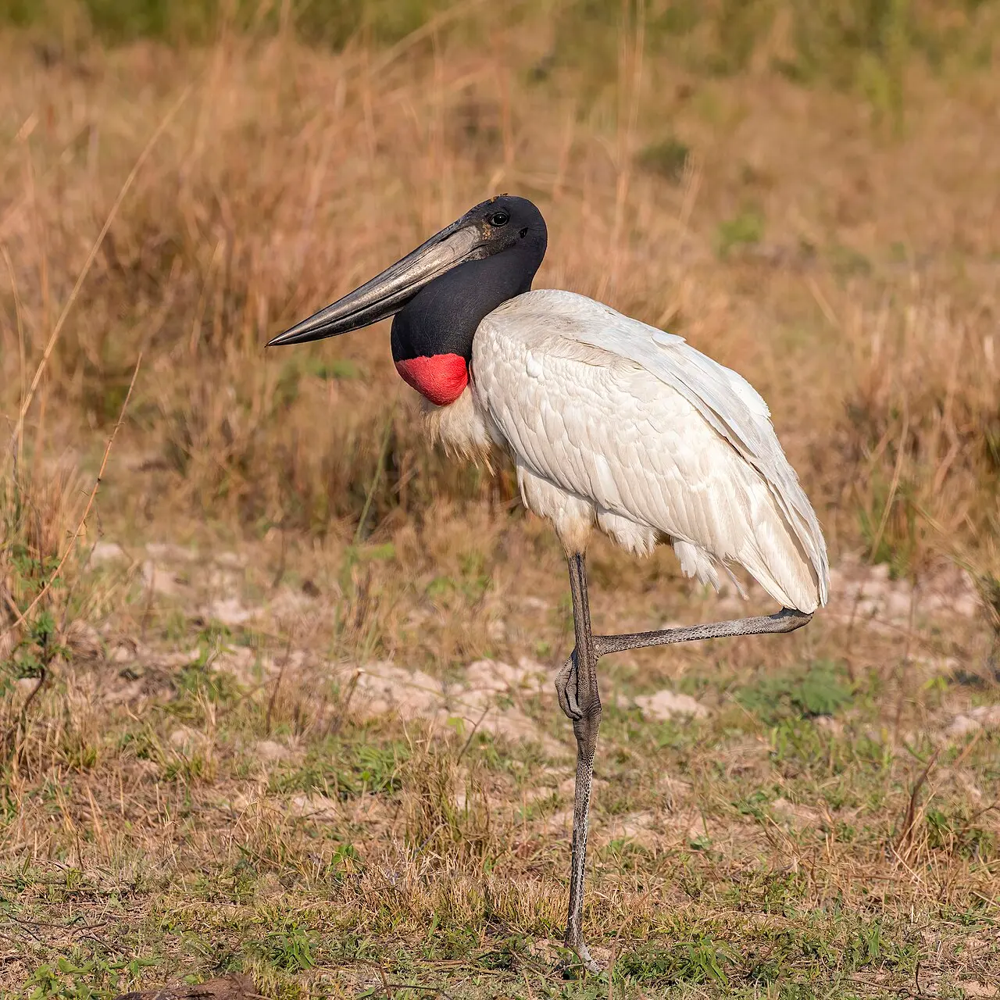
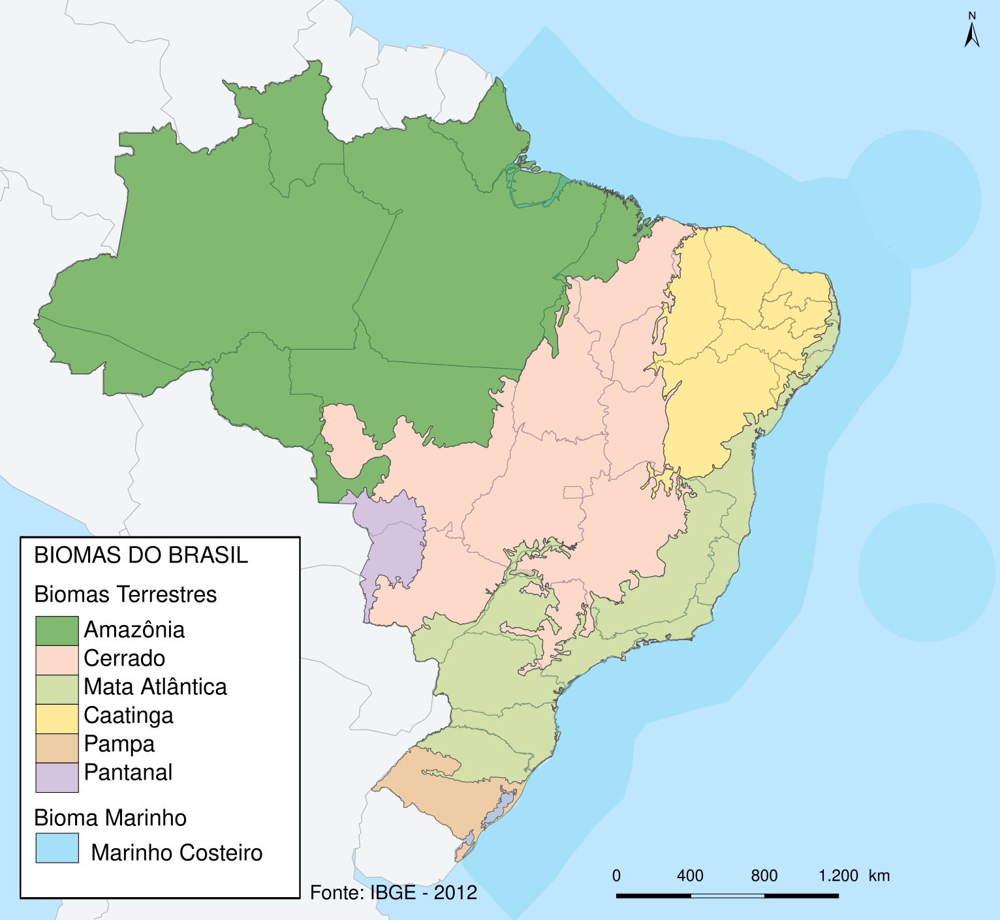
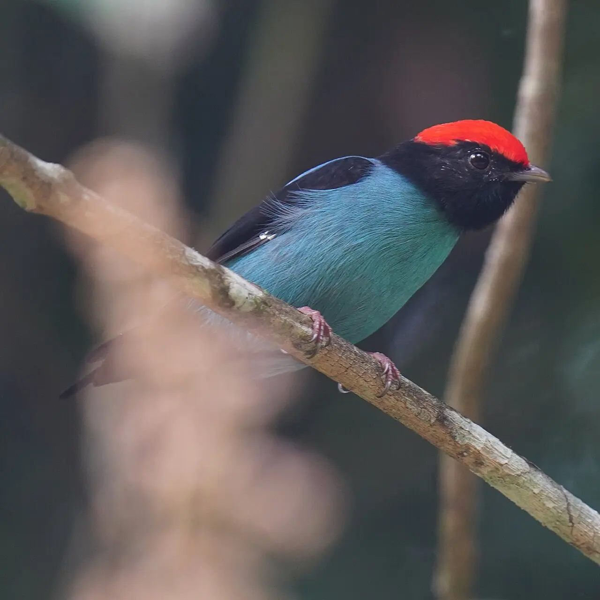

Módulo 5 Aula 23
Onde vivem
O Brasil tem seis grandes biomas, e cada um tem aves diferentes. Algumas só existem em um deles.
- Os seis biomas do Brasil e onde ficam
- O que é uma espécie endêmica
- Exemplos de aves de alguns biomas

Ave da aula
Tuiuiú Jabiru mycteria
Os seis biomas
Um é uma grande área com clima e vegetação parecidos. O IBGE, órgão oficial de estatística do país, reconhece seis biomas continentais no Brasil: Amazônia, Mata Atlântica, Caatinga, Cerrado, Pantanal e Pampa[1, 2]. Toque em cada ponto do mapa.
Toque nos pontos para saber onde fica cada bioma.

Escolha um ponto
O nome do bioma e uma descrição curta aparecem aqui.
A legenda do mapa está em inglês: Amazon (Amazônia), Cerrado, Atlantic Forest (Mata Atlântica), Caatinga, Pampas (Pampa) e Pantanal. Fonte dos dados: IBGE, 2012[1].
Aves de um lugar só
Uma espécie vive só em uma região. Na Mata Atlântica, o WikiAves lista, entre as aves endêmicas, o papagaio-de-cara-roxa (Amazona brasiliensis), o papagaio-de-peito-roxo (Amazona vinacea), o papo-branco (Biatas nigropectus) e o anumará (Anumara forbesi)[3]. O tangará-dançarino, que vimos na aula 20, também é uma ave da Mata Atlântica: os estudos com a espécie foram feitos nessa região[4].
Exemplos por bioma
Os exemplos abaixo foram escolhidos por terem fonte confiável. Outros biomas, como o Cerrado e o Pampa, têm aves próprias; para explorá-las, consulte o WikiAves ou o guia de aves da sua região.

Pantanal
Esta foto do colhereiro e as do tuiuiú, da ema e da seriema (aula 5) foram feitas no Parque Estadual Encontro das Águas, em Mato Grosso, que abrange uma área do Pantanal rica em cursos de água[6].
Caatinga
A ararinha-azul (Cyanopsitta spixii) é nativa da Caatinga, no Nordeste do Brasil. Foi considerada extinta na natureza no ano 2000[5]. Falamos dela na aula 27.

Amazônia
Para a Amazônia, o WikiAves e o guia de aves da região mostram muitos exemplos. Uma pesquisa sobre araras e sementes de palmeiras foi feita em uma savana amazônica da Bolívia[7], o que mostra como o bioma se estende para além do Brasil.
Palavras novas
Teste rápido
Sem nota. Se errar, tente de novo.
Quantos biomas continentais o IBGE reconhece no Brasil?
O que é uma espécie endêmica?
Em que bioma vivia a ararinha-azul?
Referências e leitura complementar
Onde conferir o que foi dito nesta aula. Os números entre colchetes no texto levam a estas fontes. Os links abrem em outra aba.
- BiomasIBGE · Instituto Brasileiro de Geografia e Estatística · portuguêsOs seis biomas continentais do Brasil e o mapa oficial.
- Biomas (Atlas Geográfico Escolar)IBGE · português · leitura complementarExplicação escolar dos biomas brasileiros.
- Bioma da Mata AtlânticaWikiAves · portuguêsAves da Mata Atlântica e endemismo.
- Cooperative behavior and social organization of the Swallow-tailed Manakin (Chiroxiphia caudata)Behavioral Ecology and Sociobiology · inglêsO tangará-dançarino: machos em dupla dançam para a fêmea.
- Coexistence and habitat restoration planning for the reintroduction of Spix's macawPubMed Central (artigo científico) · inglêsArtigo científico sobre a reintrodução da ararinha-azul na Caatinga.
- Parque Estadual Encontro das ÁguasWikipédia · portuguêsO parque, em Mato Grosso, abrange uma área do Pantanal rica em cursos de água. Várias fotos deste curso foram feitas lá.
- Seed dispersal by macaws shapes the landscape of an Amazonian ecosystemScientific Reports (Nature) · inglêsAraras espalhando sementes na Amazônia.
Os endereços foram abertos e conferidos em 29/09/2026. Alguns sites de revistas científicas e de órgãos oficiais exigem verificação humana e não puderam ser testados por robô. Sites externos podem mudar ou sair do ar.
Para levar
Em três frases
- O IBGE reconhece seis biomas continentais no Brasil: Amazônia, Mata Atlântica, Cerrado, Pantanal, Caatinga e Pampa.
- Uma espécie endêmica vive só em uma região. A Mata Atlântica abriga várias aves endêmicas.
- Cada bioma tem seus exemplos de aves, e muitas estão ameaçadas.